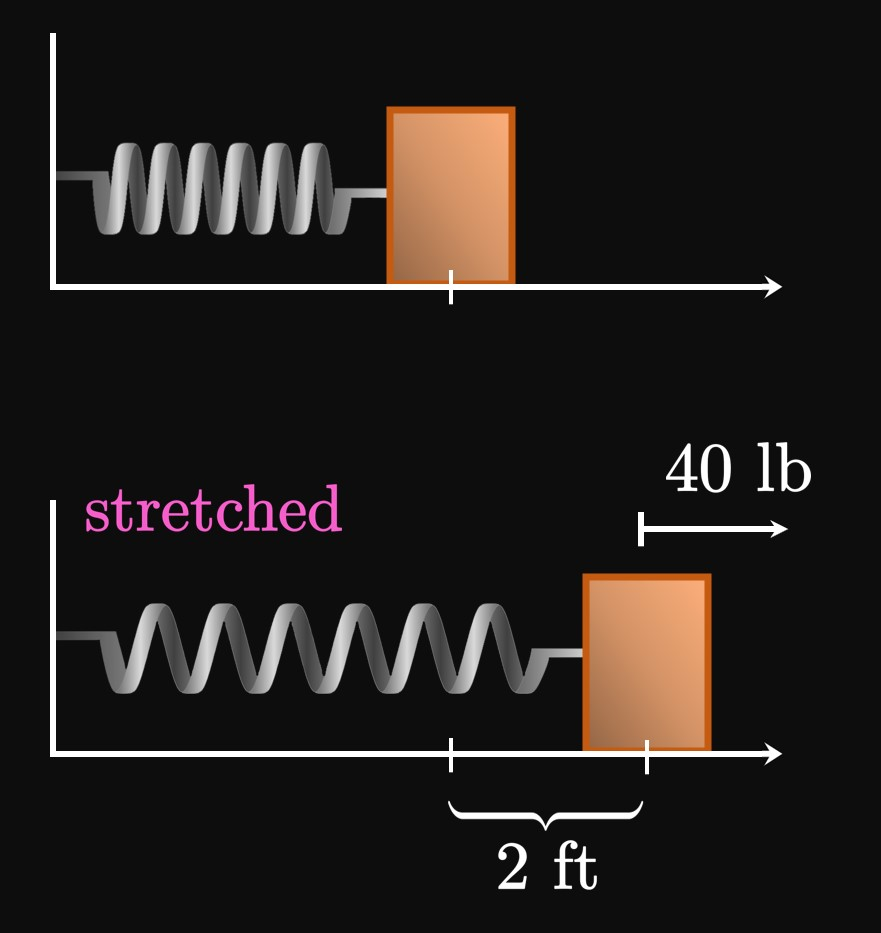

0.5 Exercise Solutions: Linear Functions and Equations
EXERCISE 1
What defines a linear function?
What are the two useful forms for writing an equation of a line?
SOLUTION
A linear function is defined by a constant rate of change (the slope \(m\));
it can be written in the form
\[f(x) = mx + b \pd\]
This form is called slope-intercept form;
it defines a linear function given the slope and \(y\)-intercept \((0, b).\)
Another useful form for writing an equation of a line is point-slope form:
\[y - y_0 = m \par{x - x_0} \cma\]
where \(\par{x_0, y_0}\) is a point on the line.
EXERCISE 2
Identify whether each line is horizontal or vertical.
\(y = 4\)
\(x = -7\)
\(y = 0\)
SOLUTION
Horizontal.
Vertical.
Horizontal.
In fact, \(y = 0\) is the same line as the \(x\)-axis.
(Likewise, \(x = 0\) is the same line as the \(y\)-axis.)
EXERCISE 3
Identify the slope and \(y\)-intercept of each line.
\(y = 4x - 7\)
\(y = 6 - \tfrac{1}{2} x\)
\(x + y = 2\)
\(x = \tfrac{1}{2} (y - 3)\)
SOLUTION
It is easiest to identify the slope and \(y\)-intercept
when a line is expressed in slope-intercept form,
\(y = mx + b.\)
Then the slope is \(m\) and the \(y\)-intercept is \((0, b).\)
The slope is \(4,\)
and the \(y\)-intercept is \((0, -7).\)
The slope is \(-1/2,\)
and the \(y\)-intercept is \((0, 6).\)
Subtracting \(x\) from both sides gives
\[y = -x + 2 \pd\]
Since \(x\) is multiplied by \(-1,\)
the slope is \(-1.\)
The \(y\)-intercept is \((0, 2).\)
Let's solve for \(y,\) as follows:
\[
\ba
x &= \tfrac{1}{2} (y - 3) \nl
2x &= y - 3 \nl
y &= 2x + 3 \pd
\ea
\]
Accordingly, the slope is \(2\) and the \(y\)-intercept is \((0, 3).\)
EXERCISE 4
For
\[(2, 6) \cmaa (6, 18)\]
calculate the slope of the line that passes through the two points given.
SOLUTION
The slope is
\[
\ba
m &= \frac{\Delta y}{\Delta x} \nl
&= \frac{18 - 6}{6 - 2} \nl
&= \boxed 3
\ea
\]
EXERCISE 5
For
\[(5, 7) \cmaa (7, -3)\]
calculate the slope of the line that passes through the two points given.
SOLUTION
The slope is
\[
\ba
m &= \frac{\Delta y}{\Delta x} \nl
&= \frac{-3 - 7}{7 - 5} \nl
&= \boxed{-5}
\ea
\]
EXERCISE 6
For
\[(-9, 3) \cmaa (-2, -8)\]
calculate the slope of the line that passes through the two points given.
SOLUTION
The slope is
\[
\ba
m &= \frac{\Delta y}{\Delta x} \nl
&= \frac{-8 - 3}{-2 - (-9)} \nl
&= \boxed{-\frac{11}{7}}
\ea
\]
EXERCISE 7
For
\(\ds y = \tfrac{2}{3} x + 5 \cmaa y = \tfrac{2}{3} x + 9\)
identify whether the two lines are parallel, perpendicular, or neither.
SOLUTION
Each line has a slope of \(2/3,\)
so the lines are parallel.
EXERCISE 8
For
\(\ds y = -4x - 7 \cmaa y = \tfrac{1}{4} x + 3\)
identify whether the two lines are parallel, perpendicular, or neither.
SOLUTION
The line \(y = -4x - 7\) has slope \(-4,\)
while the line \(y = \tfrac{1}{4} x + 3\)
has slope \(1/4.\)
Because \(-4\) and \(1/4\) are negative reciprocals of each other,
the lines are perpendicular.
EXERCISE 9
For
\(\ds y = 5 - 3x \cmaa y = 8 - \tfrac{1}{3} x\)
identify whether the two lines are parallel, perpendicular, or neither.
SOLUTION
The slope of \(y = 5 - 3x\) is \(-3,\)
while the slope of \(y = 8 - \tfrac{1}{3} x\) is \(-1/3.\)
Whereas \(-3\) and \(-1/3\) are reciprocals,
they are not negative reciprocals.
The lines are therefore neither parallel nor perpendicular.
EXERCISE 10
For
\[(5, 7) \scoll \txtSlope = 2\]
write an equation of the line that passes through the point with the given slope.
A line that is parallel to \(y = 6x - 3\) and passes through \((2, 4)\)
find an equation for the line.
SOLUTION
The slope of \(y = 6x - 3\) is \(6.\)
We therefore seek an equation of the line that passes through \((2, 4)\) with slope \(6.\)
Using point-slope form, we attain
\[y - 4 = 6(x - 2) \or \boxed{y = 6x - 8}\]
EXERCISE 14
For
A line that is parallel to \(y = \tfrac{1}{3} x + 7\) and passes through \((-9, 3)\)
find an equation for the line.
SOLUTION
The slope of \(y = \tfrac{1}{3} x + 7\) is \(1/3.\)
We therefore seek an equation of the line that passes through \((-9, 3)\) with slope \(1/3.\)
Using point-slope form, we attain
\[y - 3 = \tfrac{1}{3}[x - (-9)] \or \boxed{y = \tfrac{1}{3} x + 6}\]
EXERCISE 15
For
A line that is perpendicular to \(y = 8 - \tfrac{1}{5} x\) and passes through \((1, -4)\)
find an equation for the line.
SOLUTION
The line \(y = 8 - \tfrac{1}{5} x\) has slope \(-1/5.\)
So a perpendicular line has a slope given by the negative reciprocal of \(-1/5,\)
namely, \(5.\)
We therefore seek an equation of the line with slope \(5\)
that passes through \((1, -4).\)
Applying point-slope form therefore gives
\[y - (-4) = 5 (x - 1) \or \boxed{y = 5x - 9}\]
EXERCISE 16
For
A line that is perpendicular to \(y = 3x + 5\) and passes through \((2, 2)\)
find an equation for the line.
SOLUTION
The line \(y = 3x + 5\) has slope \(3.\)
So a perpendicular line has a slope given by the negative reciprocal of \(3,\)
namely, \(-1/3.\)
We therefore seek an equation of the line with slope \(-1/3\)
that passes through \((2, 2).\)
Applying point-slope form therefore gives
\[y - 2 = -\tfrac{1}{3} (x - 2) \or \boxed{y = -\tfrac{1}{3} x + \tfrac{8}{3}}\]
EXERCISE 17
For
\[\ds
x + y = 7 \scoll y = 4x - 3
\]
solve the system of linear equations.
SOLUTION
Our objective is to find \(x\) and \(y\) such that both of the following equations are satisfied:
\begin{align}
x + y &= 7 \label{eq:ex-sys-xy7-1} \nl
y &= 4x - 3 \pd \label{eq:ex-sys-xy7-2}
\end{align}
It's easiest to solve the system by substitution
because \(y\) is expressed in terms of \(x\) in \(\eqref{eq:ex-sys-xy7-2}.\)
Since both equations are simultaneously true,
in \(\eqref{eq:ex-sys-xy7-1}\) replacing \(y\) with \(4x - 3\) gives
\[
\ba
x + 4x - 3 &= 7 \nl
5x &= 10 \nl
x &= 2 \pd
\ea
\]
To solve for \(y,\) we substitute \(x = 2\) back into either equation of the system—for example,
into \(\eqref{eq:ex-sys-xy7-2} \col\)
\[y = 4(2) - 3 = 5 \pd\]
So the solution is \(\boxed{(2, 5)}.\)
EXERCISE 18
For
\[\ds x = 3y + 1 \scoll 8 = 2x - 3y\]
solve the system of linear equations.
SOLUTION
Our objective is to find \(x\) and \(y\) such that both of the following equations are satisfied:
\begin{align}
x &= 3y + 1 \label{eq:ex-sys-4y3-1} \nl
8 &= 2x - 3y \pd \label{eq:ex-sys-4y3-2}
\end{align}
It's easiest to solve the system by substitution
because \(x\) is expressed in terms of \(y\) in \(\eqref{eq:ex-sys-4y3-1}.\)
Since both equations are simultaneously true,
in \(\eqref{eq:ex-sys-4y3-2}\) replacing \(x\) with \(3y + 1\) gives
\[
\ba
8 &= 2(3y + 1) - 3y \nl
8 &= 3y + 2 \nl
2 &= y \pd
\ea
\]
To solve for \(x,\) we substitute \(y = 2\) back into either equation of the system—for example,
into \(\eqref{eq:ex-sys-4y3-1} \col\)
\[x = 3(2) + 1 = 7 \pd\]
So the solution is \(\boxed{(7, 2)}.\)
EXERCISE 19
For
\[\ds 3x + y = 8 \scoll x - y = 4\]
solve the system of linear equations.
SOLUTION
Our objective is to find \(x\) and \(y\) such that both of the following equations are satisfied:
\begin{align}
3x + y &= 8 \label{eq:ex-sys-3y8-1} \nl
x - y &= 4 \pd \label{eq:ex-sys-3y8-2}
\end{align}
It's easiest to solve the system by elimination
because all the variables and constants are vertically aligned.
Adding \(\eqref{eq:ex-sys-3y8-1}\) and \(\eqref{eq:ex-sys-3y8-2}\)
gives
\[
\ba
3x + y + (x - y) &= 8 + 4 \nl
4x &= 12 \nl
x &= 3 \pd
\ea
\]
To solve for \(y,\) we substitute \(x = 3\) back into either equation of the system—for example,
into \(\eqref{eq:ex-sys-3y8-2} \col\)
\[3 - y = 4 \implies y = -1 \pd\]
So the solution is \(\boxed{(3, -1)}.\)
EXERCISE 20
For
\[\ds 2x - y = 5 \scoll x + 3y = -3\]
solve the system of linear equations.
SOLUTION
Our objective is to find \(x\) and \(y\) such that both of the following equations are satisfied:
\begin{align}
2x - y &= 5 \label{eq:ex-sys-2xy-1} \nl
x + 3y &= -3 \pd \label{eq:ex-sys-2xy-2}
\end{align}
It's easiest to solve the system by elimination
because all the variables and constants are vertically aligned.
Multiplying both sides of \(\eqref{eq:ex-sys-2xy-2}\) by \(2\)
and subtracting it from \(\eqref{eq:ex-sys-2xy-1},\) we attain
\[
\ba
2x - y - 2(x + 3y) &= 5 - 2(-3) \nl
-7y &= 11 \nl
y &= -\frac{11}{7} \pd
\ea
\]
To solve for \(x,\) we substitute \(y = -11/7\) back into either equation of the system—for example,
into \(\eqref{eq:ex-sys-2xy-2} \col\)
\[x + 3 \par{-\frac{11}{7}} = -3 \implies x = \frac{12}{7} \pd\]
So the solution is \(\boxed{(12/7, -11/7)}.\)
EXERCISE 21
For
\[\ds x + y = 3 \scoll 4x + 4y = 5\]
solve the system of linear equations.
SOLUTION
Our objective is to find \(x\) and \(y\) such that both of the following equations are satisfied:
\begin{align}
x + y &= 3 \label{eq:ex-sys-xy3-1} \nl
4x + 4y &= 5 \pd \label{eq:ex-sys-xy3-2}
\end{align}
It's easiest to solve the system by elimination
because all the variables and constants are vertically aligned.
Multiplying both sides of \(\eqref{eq:ex-sys-xy3-1}\) by \(4\)
and then subtracting \(\eqref{eq:ex-sys-2xy-1},\) we attain
\[
\ba
4(x + y) - (4x + 4y) &= 4(3) - 5 \nl
0 &= 7 \pd
\ea
\]
This system therefore has no solutions.
EXERCISE 22
A fruit bowl contains double the number of apples as bananas.
If the bowl has \(39\) total fruits that are either apples or bananas,
then many of each fruit does it have?
SOLUTION
Let \(x\) be the number of apples and \(y\) be the number of bananas.
To solve for both variables,
we write a system of two linear equations:
\begin{align}
x &= 2y \label{eq:fruit-1} \nl
x + y &= 39 \pd \label{eq:fruit-2}
\end{align}
Let's solve this system by substitution:
Replacing \(x\) with \(2y\) in \(\eqref{eq:fruit-2}\) gives
\[
\ba
2y + y &= 39 \nl
3y &= 39 \nl
y &= 13 \pd
\ea
\]
Then by \(\eqref{eq:fruit-1},\)
\(x = 2(13)\) \(= 26.\)
So the bowl contains 26 applies and 13 bananas.
EXERCISE 23
A farmer has a combined total of \(500\) chickens and cows,
with \(64\) fewer chickens than cows.
Determine how many chickens and cows the farmer has.
SOLUTION
Let \(x\) be the number of chickens and \(y\) be the number of cows.
To solve for both variables,
we write a system of two linear equations:
\begin{align}
x &= y - 64 \label{eq:animals-1} \nl
x + y &= 500 \label{eq:animals-2} \pd
\end{align}
Let's solve this system by substitution:
In \(\eqref{eq:animals-2}\) replacing \(x\) with \(y - 64\) yields
\[
\ba
y - 64 + y &= 500 \nl
2y - 64 &= 500 \nl
y &= 282 \pd
\ea
\]
Then by \(\eqref{eq:animals-1},\) we have
\(x = 282 - 64\) \(= 218.\)
Hence, the farmer has 218 chickens and 282 cows.
EXERCISE 24
April has \(\$20\) to purchase \(7\) flowers for her friends.
Roses cost \(\$2\) each, and lilies cost \(\$4\) each.
How many of each flower should April purchase?
SOLUTION
Let \(x\) be the number of roses bought and \(y\) be the number of lilies bought.
To solve for both variables,
we write a system of two linear equations:
\begin{align}
x + y &= 7 \label{eq:flowers-1} \nl
2x + 4y &= 20 \label{eq:flowers-2} \pd
\end{align}
Let's solve this system by elimination:
Multiplying both sides of \(\eqref{eq:flowers-1}\) by \(2\)
and subtracting it from \(\eqref{eq:flowers-2}\) gives
\[
\ba
2x + 4y - 2(x + y) &= 20 - 2(7) \nl
2y &= 6 \nl
y &= 3 \pd
\ea
\]
So by \(\eqref{eq:flowers-1},\) \(x = 7 - 3\) \(= 4.\)
Therefore, April should purchase 4 roses and 3 lilies.
EXERCISE 25
At a movie theater, a kid's ticket costs \(\$7\) and an adult's ticket costs \(\$14.\)
If \(30\) tickets are sold and the revenue from ticket sales is \(\$350,\)
then determine how many of each ticket is sold.
SOLUTION
Let \(x\) be the number of kid's tickets sold and \(y\) be the number of adult's tickets sold.
To solve for both variables,
we write a system of two linear equations:
\begin{align}
x + y &= 30 \label{eq:tickets-1} \nl
7x + 14y &= 350 \label{eq:tickets-2} \pd
\end{align}
Let's solve this system by elimination:
Multiplying both sides of \(\eqref{eq:tickets-1}\) by \(7\) and subtracting it from \(\eqref{eq:tickets-2},\)
we attain
\[
\ba
7x + 14y - 7(x + y) &= 350 - 7(30) \nl
7y &= 140 \nl
y &= 20 \pd
\ea
\]
Then by \(\eqref{eq:tickets-1},\) we find
\(x = 30 - 20\) \(= 10.\)
Hence, 10 kid's tickets and 20 adult's tickets are sold.
EXERCISE 26
In a wallet, \(14\) bills of cash have a combined value of \(\$50.\)
If the wallet contains exclusively
one-dollar bills and five-dollar bills,
then determine how many of each bill is in the wallet.
SOLUTION
Let \(x\) be the number of one-dollar bills and \(y\) be the number of five-dollar bills.
To solve for both variables,
we write a system of two linear equations:
\begin{align}
x + y &= 14 \label{eq:cash-1} \nl
x + 5y &= 50 \label{eq:cash-2} \pd
\end{align}
Let's solve this system by elimination:
Subtracting \(\eqref{eq:cash-1}\)
from \(\eqref{eq:cash-2}\) gives
\[
\ba
x + 5y - (x + y) &= 50 - 14 \nl
4y &= 36 \nl
y &= 9 \pd
\ea
\]
Then by \(\eqref{eq:cash-1},\) \(x = 14 - 9\) \(= 5.\)
Thus, the wallet contains 5 one-dollar bills and 9 five-dollar bills.
EXERCISE 27
A \(100\)-point exam has \(16\) questions,
each worth either four or seven points.
Determine how many four-point questions and seven-point questions are on the exam.
SOLUTION
Let \(x\) be the number of four-point questions and \(y\) be the number of seven-point questions.
To solve for both variables,
we write a system of two linear equations:
\begin{align}
x + y &= 16 \label{eq:points-1} \nl
4x + 7y &= 100 \label{eq:points-2} \pd
\end{align}
Let's solve this system by elimination:
Multiplying both sides of \(\eqref{eq:points-1}\) by \(4\)
and subtracting it from \(\eqref{eq:points-2}\) gives
\[
\ba
4x + 7y - 4(x + y) &= 100 - 4(16) \nl
3y &= 36 \nl
y &= 12 \pd
\ea
\]
So by \(\eqref{eq:points-1},\) \(x = 16 - 12\) \(= 4.\)
Thus, the exam has 4 four-point questions and 12 seven-point questions.
EXERCISE 28
The following table shows values of the linear function \(f(x)\) at selected values of \(x.\)
Determine the identity of \(f.\)
\(x\)
\(1\)
\(3\)
\(5\)
\(7\)
\(f(x)\)
\(6\)
\(2\)
\(-2\)
\(-6\)
SOLUTION
Since \(f\) is given to be linear,
its slope is given by selecting any two points in the table—for example,
\((1, 6)\) and \((3, 2) \col\)
\[m = \frac{2 - 6}{3 - 1} = -2 \pd\]
Next we use point-slope form with any point in the table—for example,
\((1, 6) \col\)
\[f(x) - 6 = -2(x - 1) \so f(x) = \boxed{-2x + 8}\]
EXERCISE 29
Are the points \((1, 5),\) \((2, 8),\)
and \((5, 17)\) collinear?
SOLUTIONYes.
The word collinear means all three points lie on the same straight line.
The slope of the line connecting \((1, 5)\) and \((2, 8)\)
is
\[m = \frac{8 - 5}{2 - 1} = 3 \pd\]
So an equation of the line, by point-slope form, is
\[y - 5 = 3(x - 1) \or y = 3x + 2 \pd\]
The point \((5, 17)\) indeed lies on the line \(y = 3x + 2\) since
\[17 \equalsCheck 3(5) + 2 \pd\]
So all three points lie on the line \(y = 3x + 2.\)
EXERCISE 30
Find the value of \(k\)
such that the points \((-3, 4),\) \((1, 1),\)
and \((k, -2)\) are collinear.
SOLUTION
The word collinear means all three points lie on the same straight line.
The slope of the line connecting \((-3, 4)\) and \((1, 1)\) is
\[m = \frac{1 - 4}{1 - (-3)} = -\frac{3}{4} \pd\]
So an equation of the line connecting the two points is, by point-slope form,
\[y - 1 = -\tfrac{3}{4} (x - 1) \or y = -\tfrac{3}{4} x + \tfrac{7}{4} \pd\]
Substituting \((k, -2)\) into the equation of the line, we attain
\[
\ba
-2 &= -\tfrac{3}{4} k + \tfrac{7}{4} \nl
-8 &= -3k + 7 \nl
-3k &= -15 \nl
k &= 5 \pd
\ea
\]
Hence, \(\boxed{k = 5}\) ensures that \((k, -2)\) lies on the same line
as the other two points.
EXERCISE 31
Hooke's Law states that the force required to stretch a spring past its natural length
equals the stretched length multiplied by the spring constant,
a measure of the spring's stiffness.
(This law is an excellent approximation if the stretched length is not too large.)
A force of \(40\) pounds is required to stretch a spring by \(2\) feet past its natural
length (Figure 10).
What force is required to stretch the spring by \(4\) feet past its natural length?

SOLUTION
Let \(k\) be the spring constant.
Because \(40 \un{lb}\) is required to stretch the spring \(2 \un{ft},\)
Hooke's Law gives
\[40 = k(2) \implies k = 20 \pd\]
So the force needed to stretch the spring by \(4 \un{ft}\) is
\[F = 20(4) = \boxed{80 \un{lb}}\]
EXERCISE 32
Particle A moves to the right with a speed of \(4\) feet per second.
Particle B, initially located \(20\) feet to the right of particle A,
travels to the left with a speed of \(6\) feet per second.
When do both particles collide?
SOLUTION
Consider an axis system where \(x = 0\) is particle A's initial position.
Then particle B is initially located at \(x = 20.\)
Let \(t\) be time in seconds;
both particles' positions are functions of \(t.\)
The rate of change of each particle is its speed.
Since particle A's speed is \(4 \undiv{ft}{sec},\)
its position function is \(x_A(t) = 4t.\)
Particle B's position is decreasing at a rate given by its speed, \(6 \undiv{ft}{sec},\)
and its initial position is \(20.\)
Accordingly, its position function is \(x_B(t) = 20 - 6t.\)
When both particles collide, their \(x\)-coordinates are equivalent, so
\[
\ba
x_A(t) &= x_B(t) \nl
4t &= 20 - 6t \nl
10 t &= 20 \nl
t &= \boxed{2 \un{sec}}
\ea
\]
Also note that \(x = 4(2)\) \(= 20 - 6(2)\) \(= 8.\)
Thus, both particles collide \(8 \un{ft}\) to the right of particle A's initial position.